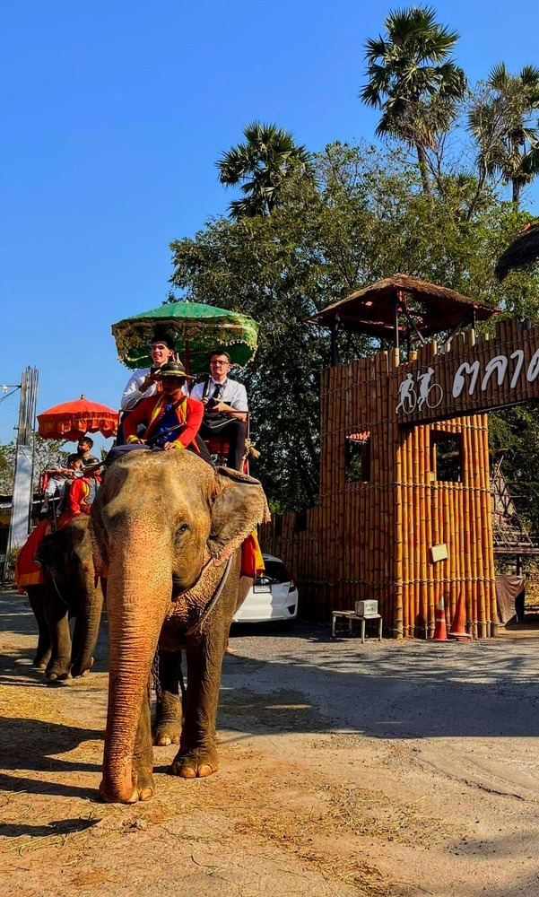
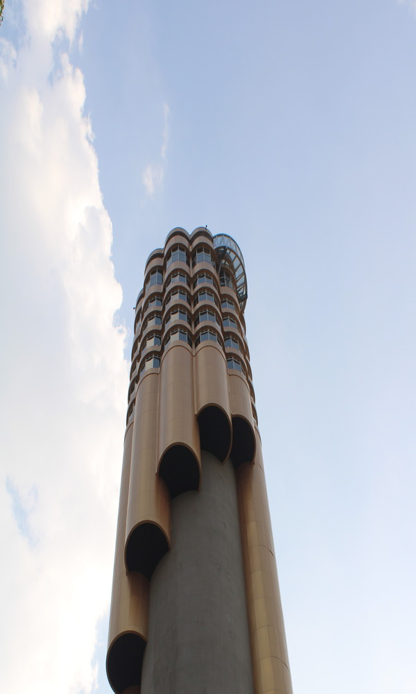
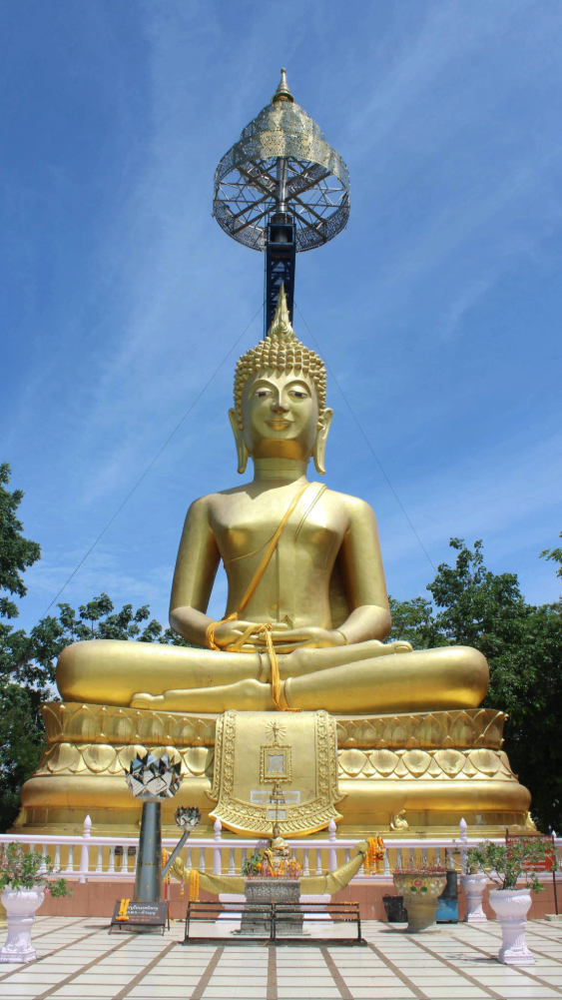
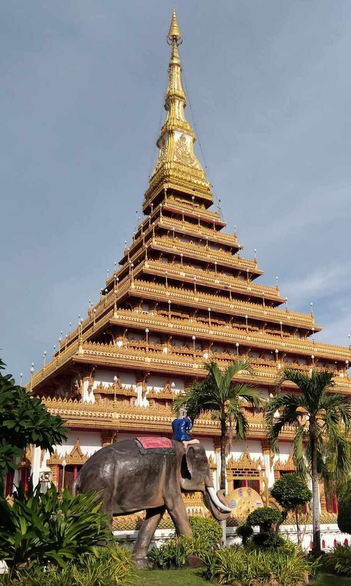
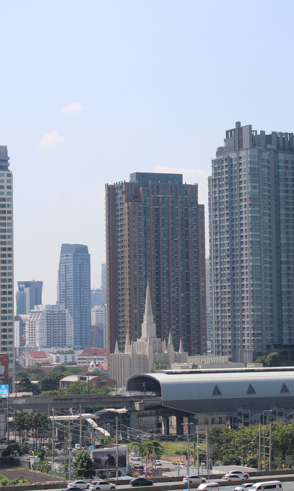

Ayuthaya
Ancient water market and zoo

Roi-et
Thai "Isaan" cultural hub

Kratong Hill
Grand statue atop a volcanoe

Wat Nong Wang
surounded by a park and market

The Temple
The house of The Lord